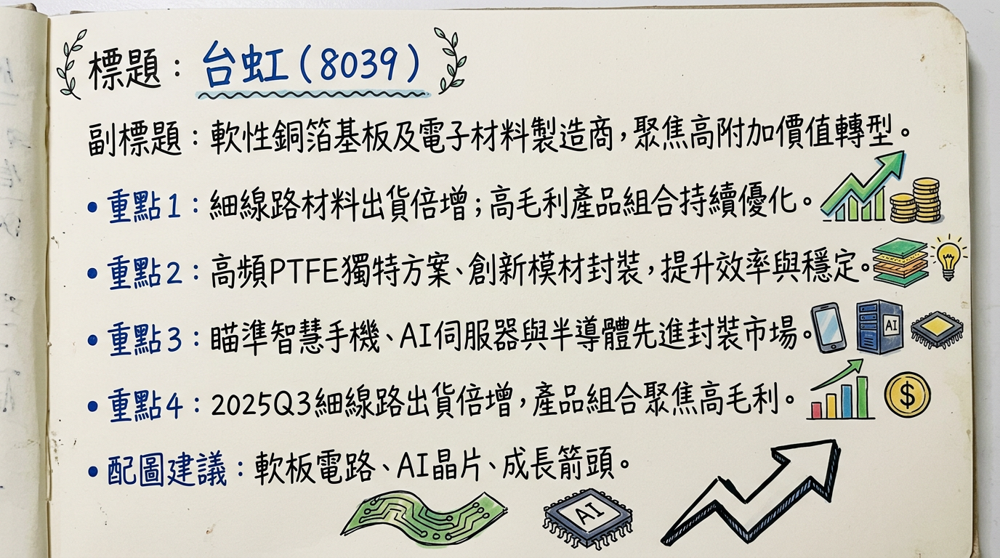
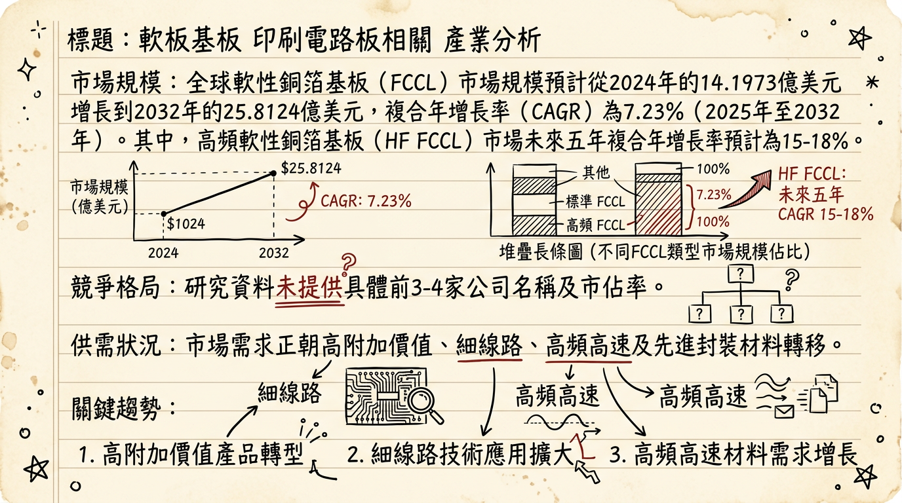
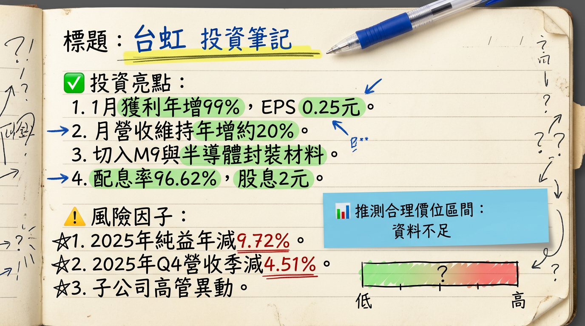

8039 台虹 深度研究報告
一句話摘要
台虹科技正積極轉型，從傳統軟性銅箔基板（FCCL）製造商聚焦於高附加價值產品，包括細線路材料、M9等級高頻高速材料及半導體先進封裝材料，受惠於AI、5G/6G及電動車趨勢，泰國廠產能開出與新產品驗證將是2026年獲利成長的主要動能，公司營運策略重心放在毛利率與獲利優化而非營收絕對成長。
公司概覽
台虹科技（8039）核心業務為軟性銅箔基板（FCCL）及相關電子材料，發展主軸聚焦於三大高附加價值領域：
- 細線路材料（Fine-pitch FPC）：主要應用於智慧型手機的顯示器和相機模組等高附加價值領域，以應對高傳輸效率與高佈線密度的需求。
- 高頻高速材料（M9等級CCL）：採用獨特的PTFE填料型方案，鎖定AI伺服器市場，包含PCIe 6.0傳輸線及新一代伺服器架構中的高速連接板，在訊號傳輸穩定性、厚度客製化及供應鏈獨立性具優勢。
- 半導體先進封裝材料：提供創新的模材（Film-type）解決方案，取代傳統液態化學品製程，應用於先進封裝（如CoWoS或Panel Level Packaging）的暫時性貼合膠等材料。
營收結構：
根據2025年第三季法說會資料，細線路材料的出貨量已實現倍數增長。公司整體營運策略為篩選高毛利訂單以優化產品組合，預期高毛利的半導體材料營收佔比若能提升，將有助於毛利率結構性改善。
- 目前未找到 2025-2026 年各業務線的最新具體營收比例資料。
製造基地：
台虹的製造基地包含台灣及泰國。
- 泰國廠：第一期已於2024年中投產，並預計在2025年完整貢獻全年營收。由於全球供應鏈「China+1」策略，歐美客戶訂單正大幅轉移至泰國廠生產，預期泰國廠的稼動率將顯著高於中國廠。若市場需求強勁，泰國廠的第二條產線預計在2026年投入，進一步推升海外產能佔比。
- 目前未找到 2025-2026 年各製造基地營收貢獻比例資料。
核心競爭優勢
高附加價值產品轉型：公司積極將重心從傳統FCCL轉向細線路、M9級高頻高速及半導體先進封裝材料，鎖定高成長、高毛利應用領域。
獨特技術方案：在高頻高速材料領域，提供獨特的PTFE填料型CCL方案，適用於AI伺服器PCIe 6.0及未來6G通訊，具備訊號穩定性及厚度客製化優勢。在半導體先進封裝材料，則提供創新的模材解決方案，優於傳統液態化學品。
全球供應鏈重組受益者：「China+1」策略促使歐美客戶訂單轉移至泰國廠，使泰國廠產能利用率提升，並具備擴產彈性以應對未來需求。
精準市場定位：深耕AI伺服器、HBM、AI手機、電動車等關鍵投資題材所需的核心材料，掌握產業趨勢脈動。
財務分析
月營收趨勢
| 月份 | 金額 (新台幣億元) | 月增率 (MoM) | 年增率 (YoY) |
|---|
| 2026年1月 | 8.76 | -0.66% | 18.24% |
| 2025年12月 | 8.82 | -2.35% | 18.87% |
| 2025年11月 | 9.03 | -5.90% | 21.40% |
| 2025年10月 | 9.60 | -7.40% | 28.90% |
| 2025年9月 | 10.37 | 10.80% | 18.80% |
| 2025年8月 | 9.36 | 3.80% | -2.90% |
季度數據
| 項目 | 2025年第三季 | 2025年第四季 |
|---|
| 季營收 (億元) | 28.75 | 27.45 |
| 季增率 | 4.08% | -4.51% |
| 年增率 | 0.74% | 23.08% |
| 毛利率 | 18.5% | 19.57% |
| 營業利益 (億元) | 1.32 | 1.07 |
| 營業利益率 | 4.6% | 3.91% |
| 稅後淨利 (億元) | 2.25 | 1.93 |
| 稅後淨利率 | 7.83% | 7.0% |
| EPS (元) | 0.88 | 0.74 |
年度趨勢
| 項目 | 2024實際 | 2025實際 | 2026預估 (券商) |
|---|
| 營收 (億元) | 99.38 | 106.09 (+6.75%) | 130-145 (+15-20%) |
| EPS (元) | 2.53 | 2.07 (-9.72%) | 5.0-6.0 |
法說會重點 (2025年11月25日)
- 2025年第四季展望：需求優於原先預期，淡季下滑幅度可望較往年收斂，營運有望淡季不淡，主要受惠於細線路材料出貨強勁，以及高頻高速材料進入伺服器終端客戶驗證階段。
- 2026年營運目標：不追求營收的絕對成長，將以篩選訂單與提升毛利率為重心，追求獲利成長幅度大於營收。
- 細線路材料：2025年第三季出貨量已實現倍數增長，主力終端客戶需求維持雙位數成長。
- 高頻高速材料 (M9等級CCL)：已與伺服器端客戶進入驗證階段，進度符合預期，預計在2026年通過各大終端客戶認證並進入放量期。
- 半導體先進封裝材料：原訂2025年底進入工程驗證，因需協助客戶取得配套而略有遞延，主力目標仍放在2027年完成全套認證。預計2026年營收貢獻尚不明顯，主要目標是協助客戶完成認證。
- 泰國廠產能：第一期已於2024年中投產，2025年將完整貢獻全年營收。若M9材料獲客戶導入並要求擴產，泰國廠第二條產線預計在2026年投入。
- 資本支出：若M9材料獲客戶導入並要求擴產，預估數年累積的投資規模將不低於新台幣30億元。
- 存貨水位：2025年前三季存貨水位維持策略性偏高，預計第四季可望開始明顯去化。
券商觀點
| 券商名稱 | 報告日期/參考資訊來源 | 目標價 (新台幣元) | 評等 | 備註 |
|---|
| 方格子vocus (Guaguabobo) | 2025年11月30日 | 85-90 (短線壓力區) | 中長期看好 | 預期先進封裝佔營收10%可挑戰20-22倍本益比 |
| 富聯網 | 2025年11月26日 | - | 長線○ | 市場對台虹未來成長已反映不少 |
| 不明券商 | 報告日期不明 (可能早於2025年) | 60-72 | - | 獲利潛力可望持續成長 (此資訊可能已過時) |
* 券商預估 (截至2025年8月31日)：
3.65元。
* 方格子vocus (Guaguabobo, 2025年11月30日)：約4.0至4.5元。
* 方格子vocus (Guaguabobo, 2025年11月30日)：約
5.0至6.0元。
財報深度分析
利潤率趨勢 (季)
| 季度 | 毛利率 (%) | 營業利益率 (%) | 稅後淨利率 (%) |
|---|
| 2024年第一季 | 22.95 | 6.25 | 6.38 |
| 2024年第二季 | 25.29 | 11.02 | 9.43 |
| 2024年第三季 | 21.24 | 8.01 | 5.27 |
| 2024年第四季 | 15.72 | -0.31 | -0.69 |
| 2025年第一季 | 18.74 | 3.70 | 3.80 |
| 2025年第二季 | 20.07 | 6.13 | 0.84 |
| 2025年第三季 | 18.51 | 4.59 | 7.83 |
| 2025年第四季 | 19.57 | 3.91 | 7.00 |
- 2024年第四季營運壓力：受消費電子去庫存化影響，毛利率、營業利益率和稅後淨利率均處於低點，營業利益率甚至轉負。
- 2025年轉型效益與產品組合優化：隨著產品組合向細線路、高速銅箔基板與半導體封裝材料傾斜，利潤結構開始改善。
- 匯率與原物料影響：2025年第三季新台幣升值對毛利率造成約3個百分點的壓力。原物料成本波動亦是影響因素。
存貨與營運
| 季度 | 存貨週轉天數 | 應收帳款週轉天數 |
|---|
| 2024年第一季 | 88.70 | 135.30 |
| 2024年第二季 | 70.38 | 101.90 |
| 2024年第三季 | 71.56 | 118.99 |
| 2024年第四季 | 82.52 | 141.55 |
| 2025年第一季 | 91.89 | 125.11 |
| 2025年第二季 | 89.05 | 103.08 |
| 2025年第三季 | 83.92 | 110.13 |
- 存貨分析：2025年前三季存貨水位較高，主要因應年初原物料上漲與供應不穩而策略性備貨，成功節省急單運輸費用。預期2025年第四季隨著庫存去化，營業現金流已轉為明顯淨流入。
資本支出
- 近三年資本支出：2025年前三季資本支出為新台幣3.4億元，主要投入泰國廠第一期建設。
- 未來資本支出計畫：若M9材料獲客戶導入並要求擴產，預估數年累積的投資規模將不低於新台幣30億元，顯示未來潛在產能擴張幅度顯著。
- 折舊攤銷：隨著泰國廠一期於2024年第四季投產，預計相關折舊攤銷將有所增加。
股權異動
- 董監事/大股東申報轉讓：截至2026年1月，全體董監質押股票總計5,800張，質押比例約23.68%。董事長僑美開發股份有限公司持股17,012張（6.63%），質押比率34.09%。
- 庫藏股買回紀錄：曾於2025年4月14日至6月13日實施庫藏股，預計買回1萬張股票，買回區間28元至50元，目的為轉讓給員工。
- 可轉換公司債 (CB)：2025年9月10日公告，2021年發行的7,000萬美元海外無擔保可轉換公司債已全數轉換完畢，負債比降至26%的低水位，財務體質穩健。
- 增減資計畫：目前未找到2024-2026年新的現金增資或減資計畫。
- 股利政策：
* 2026年：董事會決議配發新台幣2.00元現金股利，配息率達96.62%。
* 2025年：發放現金股利新台幣2.495元，現金殖利率5.07%。
* 2024年：發放現金股利新台幣0.92元，股票股利新台幣0.46元。
產業分析
該產業全球市場規模與CAGR成長率
* 全球市場規模預計將從2024年的
14.1973億美元增長到2032年的
25.8124億美元，複合年增長率（CAGR）為
7.23% (2025-2032年)。
* 高頻軟性銅箔基板（HF FCCL）市場總規模預計在15億至20億美元之間，未來五年複合年增長率預計為15-18%。
* 全球市場在2024年價值約為
37.5億美元，預計到2031年將達到
73.7億美元，CAGR為
11.0% (2025-2031年)。
* 全球先進封裝市場規模在2025年約為
516.5億美元，預計將以
11.75%的CAGR從2026年增長到2034年，屆時將達到
1403.8億美元。
* 半導體先進封裝材料市場在2024年價值為124.3億美元，預計到2034年將達到268.2億美元，CAGR為11.0%。
供需狀況
- 高階材料 (如高頻高速CCL和先進封裝材料) 需求正在增長，呈現供不應求或供應緊張的趨勢。
- 高頻高速CCL：亞洲太平洋地區主導需求約佔60%，長期需求持續增加。
- 半導體先進封裝材料：供應鏈挑戰是主要障礙，先進基板、鍵合材料和專業設備供應有限，導致生產瓶頸。台積電CoWoS和三星I-Cube產能擴張以滿足AI加速器需求，印證高需求驅動產能擴張。
產業平均毛利率水準
- FCCL (無膠型)：約20%。
- 高頻高速CCL：
* Rogers Corporation (2024年)：
33%
* 台光電子 (2025年10月29日近十二個月)：29.90%
* 聯茂 (最新數據近十二個月)：23.06%
* 台燿 (2024年)：12.6%
- 半導體先進封裝 (OSAT)：2024年平均毛利率約16.4%。
競爭格局
全球高頻高速銅箔基板 (CCL) 主要製造商 (2024年)
| 排名 | 公司名稱 | 國家/地區 | 2024年市場份額 (約) | 備註 |
|---|
| 1 | Panasonic (松下) | 日本 | 12% | 高頻高速CCL市場領導者 |
| 2 | Elite Material (台光電子) | 台灣 | 40% (高階高速CCL) | 高階高速CCL領域市佔率領先，AI伺服器關鍵供應商 |
| 3 | Taiwan Union Technology (聯茂) | 台灣 | - | 主要參與者之一 |
| 4 | ITEQ (台燿) | 台灣 | - | 主要參與者之一 |
| 5 | Kingboard Laminates (建滔積層板) | 香港 | - | 主要參與者之一 |
| - | Rogers Corporation (羅傑斯) | 美國 | 約10% (高頻CCL) | PTFE基RF層壓板先驅 |
| 排名 | 公司名稱 | 國家/地區 | 2025年市佔率 | 備註 |
|---|
| 1 | ASE Technology Holding (日月光投控) | 台灣 | 26.5% 以上 | 市場領導者 |
| 2 | Amkor Technology, Inc. | 美國 | - | - |
| 3 | TSMC (台積電) | 台灣 | - | - |
| 4 | JCET Group Co., Ltd. | 中國 | - | - |
| 5 | Intel Corporation | 美國 | - | - |
| 排名 | 公司名稱 | 國家/地區 | 2024年市佔率 (估計) |
|---|
| 1 | NIPPON STEEL Chemical & Material | 日本 | 19% |
| 2 | Sumitomo Metal Mining | 日本 | - |
| 3 | Nitto Denko Corporation | 日本 | - |
| 4 | Arisawa Manufacturing Co., Ltd. | 日本 | - |
| 5 | KURARAY Co., Ltd. | 日本 | - |
台虹 vs 主要競爭對手的具體比較
| 比較項目 | 台虹 (8039) | 主要競爭對手 |
|---|
| 技術 | - 細線路材料、M9等級CCL (PTFE填料型方案) | - Panasonic: Megtron系列高速CCL領導者 |
| - 半導體先進封裝創新模材解決方案 | - Rogers: PTFE基RF層壓板先驅 |
| | - 台光電: 高階CCL強者，樹脂化學技術 |
| 產能 | - 泰國廠一期 (2024年中投產, 2025完整貢獻) | - 台光電: 2025-2026年多地擴建，總產能增逾60% |
| - 泰國廠二期 (2026年若需求強勁投入) | - Panasonic: 2025Q1日本產線升級30% |
| - M9材料未來擴產規模預估不低於30億元 | |
| 客戶 | - FCCL應用於消費電子、車用、5G/AIoT、工控 | - Panasonic: Cisco, NVIDIA, Fujitsu |
| - M9級CCL進入伺服器端客戶驗證中 | - Rogers: Continental, Raytheon, Apple |
| - 先進封裝材料已與多家半導體客戶送樣中 | - 台光電: 全球領先AI伺服器和交換機巨頭 |
| 價格 | - 專注高附加價值產品，追求毛利率優化 | - 高頻高速CCL ASP每平米15-100美元不等 |
台灣同業比較
| 公司名稱 | 股票代碼 | 2024年營收 (新台幣億元) | 2025年EPS (新台幣元) | 2025年近十二個月毛利率 (%) |
|---|
| 台虹 (Taiflex Scientific) | 8039 | 99.38 | 2.07 | 19.57% (Q4) |
| 台光電子 (Elite Material) | 2383 | 644 | 37.72 | 29.90% |
| 聯茂 (Taiwan Union Technology) | 6274 | 274.67 | 10.83 (Q3 TTM) | 23.06% |
| 台燿 (ITEQ Corporation) | 6213 | 293.8 | 0.11 (TTM) | 14.3% |
產業趨勢
5G/6G 發展與高頻高速傳輸需求：
* 趨勢：全球5G/6G網路部署，要求PCB材料具備更低訊號損耗和穩定介電性能。2026年將有超過150萬個5G基地台需先進PCB材料。
* 影響：台虹M9等級CCL等高頻高速材料直接受益於5G基礎設施、通訊設備及未來AI手機換機潮對高頻材料的需求。
AI 伺服器、HPC 與數據中心對先進封裝和異質整合需求：
* 趨勢：AI工作負載增長驅動2.5D/3D IC等先進封裝及小晶片異質整合，72%的AI加速器採用先進封裝。
* 影響：台虹的半導體先進封裝材料及M9級CCL在AI伺服器中扮演關鍵角色，直接連結HBM與AI晶片整合需求。
電動車 (EV) 及 ADAS 普及與電子模組微型化：
* 趨勢：電動車和ADAS需要更緊湊、高可靠性和高性能的電子模組，對高頻高速CCL及先進封裝有高要求。
* 影響：台虹的細線路材料和高頻高速材料可應用於汽車電子，先進封裝材料有望在電動車功率模組領域找到機會。
對 台虹 而言的具體機會和威脅
*
市場趨勢契合：聚焦高階材料，完美契合AI、5G/6G、HBM、EV等高成長領域。
* 產品轉型與技術獨特性：高附加價值產品策略，獨特PTFE填料型M9 CCL及先進封裝膜材具競爭優勢。
* 全球佈局與「China+1」：泰國廠受惠供應鏈重組，提升海外產能利用率及擴產彈性。
*
技術替代與競爭：高階材料市場競爭激烈，M9材料和先進封裝膜材的認證與客戶導入速度是關鍵風險。
* 原材料價格波動：銅箔、樹脂等成本波動可能壓縮利潤空間。
* 資本支出高昂：M9材料擴產可能需要數年累積投資30億元，對財務彈性有一定考驗。
* 新材料認證週期長：先進封裝材料全套認證目標2027年，可能影響新產品營收貢獻時程。
相關投資題材的具體連結
*
M9等級CCL：用於AI伺服器的PCIe 6.0傳輸線及高速連接板，確保訊號穩定性。
* 半導體先進封裝材料：應用於CoWoS、PLP等先進封裝，對於AI加速器異質整合和HBM整合至關重要。
* 台虹的半導體先進封裝材料，特別是應用於CoWoS等先進封裝的暫時性貼合膠，直接為HBM的集成提供支援。
*
高頻高速材料：用於ADAS雷達、感測器及車載網路，滿足高速數據傳輸。
* 細線路材料：滿足電動車電子元件微型化和高密度佈線需求。
* 先進封裝材料：有望應用於SiC功率模組等高功率應用，提升散熱管理和可靠性。
近期催化劑 (2025年12月6日 - 2026年3月6日)
利多事件清單
- 2026年3月3日：公布2025年全年財報，稅後純益5.35億元，EPS 2.07元。董事會決議配發新台幣2.00元現金股利，配息率達96.62%，展現獲利回饋股東誠意。
- 2026年3月3日：公布2026年1月自結獲利，稅後純益6558萬元，年增99%，EPS 0.25元，獲利大幅增長。
- 2026年3月3日：股價盤中上漲逾5%至112.5元，主因月營收維持年增約二成，且公司表態將以毛利率最佳化為核心，切入M9高階應用與半導體先進封裝材料，帶動中長線產品組合升級的想像空間。
- 2026年2月26日：外資強力回補4714張，當週外資買超6007張，股價收在97元，週漲19.9%。
- 2026年2月8日：公布2026年1月營收8.76億元，年增18.24%，維持穩健成長。
- 2025年12月3日：公司以PTFE填料型CCL切入AI伺服器高階PCB材料替代市場，因應T-Glass等材料供應緊縮，尋求新的「不靠布」材料路線，展現技術前瞻性。
- 225年11月30日：方格子vocus報告指出台虹正處於「傳統軟板材料」轉型至「半導體先進封裝材料」的關鍵過渡期，先進封裝材料若認證通過將是推動估值重新評價的核心動力。
- 2025年11月26日法說會：管理層指出2025年第四季需求優於預期，淡季下滑幅度可望收斂，M9等級材料與半導體封裝用膜材皆持續推進送樣流程，預期2026年將迎來新產品驅動的關鍵階段。
利空/中性事件清單
- 2026年3月5日：重要子公司如東富展科技有限公司總經理異動案，屬一般人事調整。
- 2026年1月29日：董事會決議於2026年5月27日召開115年股東常會，並將全面改選董事，屬例行性公司治理事項。
⭐ 成長動能時間軸
*
2024年中：泰國廠第一期已投產。
* 2025年：泰國廠第一期完整貢獻全年營收，受惠「China+1」策略，稼動率顯著提升。
* 2026年：若高頻材料需求強勁，泰國廠第二條產線預計投入，進一步推升海外產能佔比。
* 未來數年：若M9材料獲客戶導入並要求擴產，預估累積投資規模不低於新台幣30億元。
*
2025年第四季：M9等級高頻高速材料已與AI伺服器端客戶進入驗證階段。
* 2025-2026年：半導體先進封裝材料（暫時性貼合膠等）持續送樣認證，配合先進封裝大尺寸與面板級晶圓級封裝需求增加，與多家半導體客戶送樣中，新品應用有機會小量出貨。
* 2026年：M9等級高頻高速材料預計通過各大終端客戶認證並進入放量期，正式進入AI伺服器供應鏈。
* 2027年：半導體先進封裝膜材主力目標完成全套認證。
*
2025年第三季：智慧型手機功能升級，帶動細線路材料需求，出貨量已呈倍數成長。
* 2026年：預期將迎來AI伺服器爆發期，對高速材料與PCIe 6.0以上規格需求攀升。
* 2026年：預期將迎來AI手機換機潮，推動高頻材料需求。
2026 展望
成長動能
- AI伺服器材料放量：M9等級低損耗材料預計在2026年通過各大終端客戶認證並進入放量期，將是營收結構轉型的關鍵指標。
- 半導體先進封裝推進：儘管營收貢獻尚不明顯，但先進封裝膜材將從研發階段推進至工程驗證階段，為2027年全面認證打下基礎，長期成長潛力巨大。
- 泰國廠效益完整發揮：泰國廠第一期產能將完整貢獻全年營收，受益於「China+1」策略，稼動率高。若需求強勁，第二期擴產將進一步推升海外營收比重。
- 產品組合持續優化：公司策略性篩選高毛利訂單，降低低毛利消費性電子比重，提升高毛利AI/半導體材料比重，目標長期毛利率挑戰25%水準。
- AI手機換機潮：預期2026年AI手機換機潮將帶動相關高頻材料需求。
- 法人預估：2026年營收約新台幣130-145億元 (年增15-20%)；EPS約新台幣5.0-6.0元。
風險因子
- 新產品認證與導入進度：M9材料和半導體先進封裝膜材的客戶驗證進度，及客戶實際導入時程與量能是主要不確定性。
- 市場競爭：高階CCL和先進封裝材料市場競爭激烈，可能影響產品定價與市佔率。
- 總經與匯率波動：全球經濟不確定性，以及新台幣匯率波動，仍可能對獲利表現造成影響。
- 原物料成本：原物料價格上漲風險，可能再次對毛利率構成壓力。
投資結論
結構性轉型，迎接產業黃金十年：台虹正從傳統FCCL製造商成功轉型為高階電子材料供應商，積極布局AI伺服器、HBM、5G/6G及電動車等高成長領域，產品組合優化將驅動獲利能力質變。
M9級CCL與先進封裝材料為核心引擎：M9等級高頻高速材料預計在2026年進入AI伺服器放量期，半導體先進封裝膜材則在2027年有望完成全套認證。這兩大新品若順利量產，將顯著提升公司估值，將台虹推向高階材料供應商的行列。
泰國廠策略性佈局，掌握地緣政治紅利：「China+1」策略使泰國廠成為承接歐美客戶訂單的重要基地，2025年完整貢獻營收，2026年更可能擴充第二條產線，提供穩定且具成長潛力的海外產能。
財務體質穩健，注重獲利優化：公司負債比率已降至26%的低水位，2026年決議配發高達96.62%的現金股利，顯示其穩健的財務狀況及對股東的回饋。管理層強調「獲利成長幅度大於營收」的策略，預計帶動毛利率持續改善。
短期雖有驗證遞延風險，但長期成長趨勢明確：儘管半導體先進封裝材料認證進度略有遞延，但AI、高速傳輸等大趨勢不變，台虹產品方向與此高度契合。若2026年EPS能達到市場預估的5.0-6.0元，且考量其高附加價值產品帶來的本益比提升潛力（20-22倍），建議投資人可將台虹視為具備轉型成長潛力之標的。
目標價區間建議：新台幣120元至145元 (基於2026年預估EPS 5.5元，配合目標本益比區間22-26倍)。
本報告由 AI 自動產生，資料來源為公開網路資訊，僅供參考，不構成投資建議。產生時間：2026-03-06 00:20
📊 資訊卡


